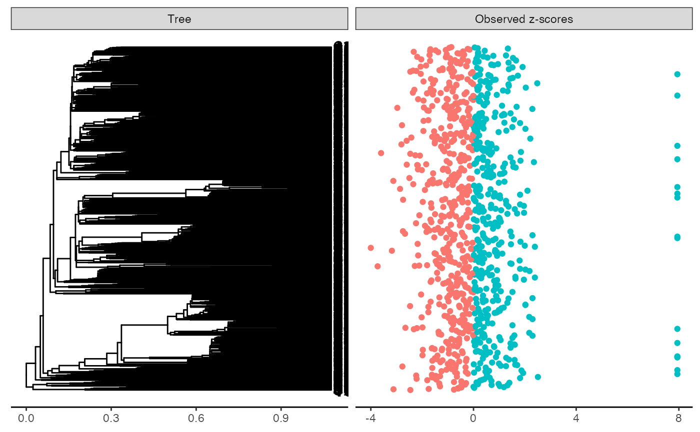
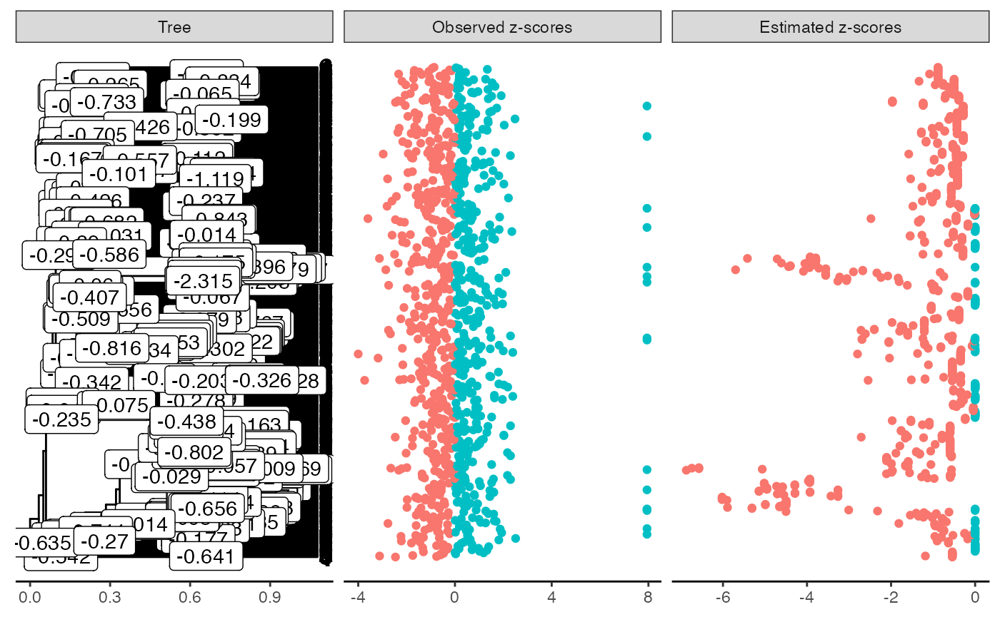
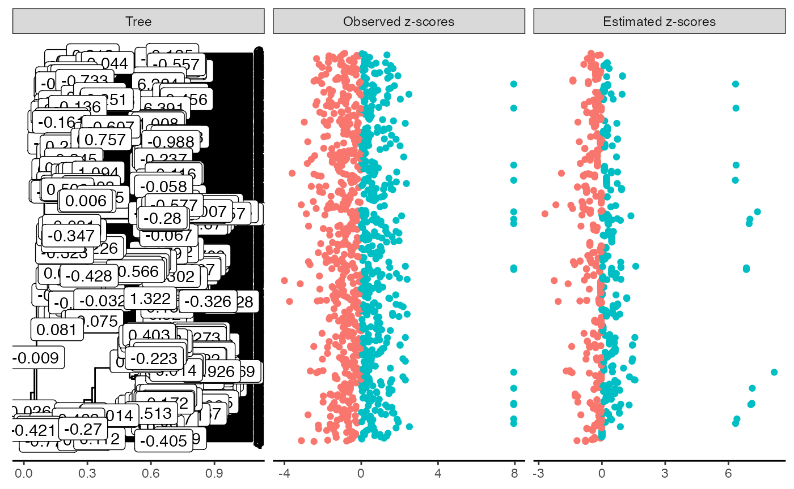
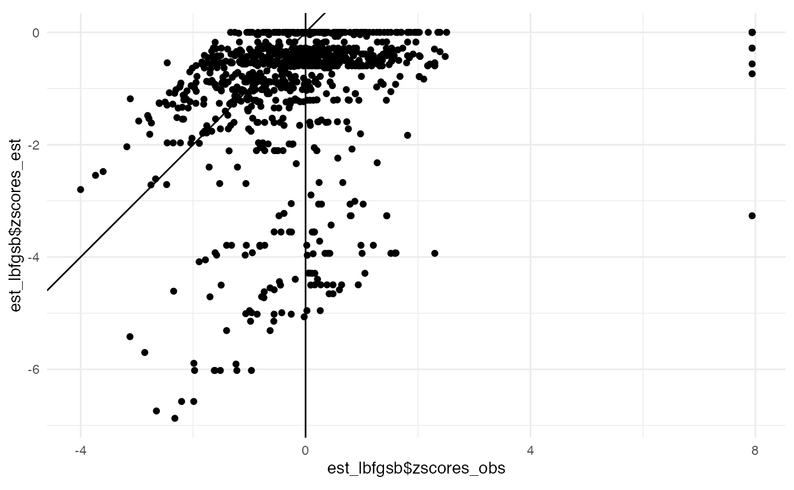

tree <- force_ultrametric(alcohol$tree)
N_branch <- length(tree$edge.length)
plot_shifts(tree, NA, obs_scores = zsco_obs)
#> Warning: `data_frame()` is deprecated as of tibble 1.1.0.
#> Please use `tibble()` instead.
#> This warning is displayed once every 8 hours.
#> Call `lifecycle::last_warnings()` to see where this warning was generated.
#> Warning: Removed 1891 rows containing missing values (geom_label).
tic()
est_lbfgsb <- estimate_shifts(Delta0 = rep(0, N_branch), zscores = zsco_obs,
lambda = 2, tree = tree, alpha = 0.1,
method = "L-BFGS-B")
toc()
#> 171.245 sec elapsed
est_lbfgsb
#> Tree is not binary with 949 leafs and 1890 branches
#> Covariance matrix has been estimated from an OU with alpha = 0.1 and sigma = 2.307
#> ---
#> Optimisation algorithm: L-BFGS-B
#> Regularization parameter: lambda = 2
#> Objective value: 1422.097
#> BIC: 5215.825
#> pBIC: 7766.488
#> ---
#> Estimated shifts: 0 0 0 0 0 0 0 0 0 0 ...
#> 252 shifts have been identified (ie 86.7 % of sparsity)
#> A parsimonious solution would involve 252 shifts
#> ---
#> Observed z-scores: -1.947 -2.059 -1.713 -0.364 -2.328 0.437 -0.153 -0.225 1.34 -1.678 ...
#> Estimated z-scores: -0.591 -0.704 -0.883 -0.883 -1.085 -0.883 -0.883 -0.883 -0.883 -0.883 ...
#> 827 z-scores have been shifted (ie 12.9 % of sparsity)
plot(est_lbfgsb)
#> Warning: Removed 1639 rows containing missing values (geom_label).tic()
est_shooting <- estimate_shifts(Delta0 = rep(0, N_branch), zscores = zsco_obs,
lambda = 2, tree = tree, alpha = 0.1,
method = "shooting", constraint_type = "beta")
toc() # 10 times faster
#> 8.33 sec elapsed
est_shooting # similar results
#> Tree is not binary with 949 leafs and 1890 branches
#> Covariance matrix has been estimated from an OU with alpha = 0.1 and sigma = 2.307
#> ---
#> Optimisation algorithm: shooting
#> Regularization parameter: lambda = 2
#> Objective value: 1422.097
#> BIC: 5215.985
#> pBIC: 7766.647
#> ---
#> Estimated shifts: 0 0 0 0 0 0 0 0 0 0 ...
#> 252 shifts have been identified (ie 86.7 % of sparsity)
#> A parsimonious solution would involve 252 shifts
#> ---
#> Observed z-scores: -1.947 -2.059 -1.713 -0.364 -2.328 0.437 -0.153 -0.225 1.34 -1.678 ...
#> Estimated z-scores: -0.591 -0.704 -0.883 -0.883 -1.085 -0.883 -0.883 -0.883 -0.883 -0.883 ...
#> 827 z-scores have been shifted (ie 12.9 % of sparsity)
plot(est_shooting)
#> Warning: Removed 1639 rows containing missing values (geom_label).
tic()
est_shooting_p <- estimate_shifts(Delta0 = rep(0, N_branch), zscores = zsco_obs,
lambda = 2, tree = tree, alpha = 0.1,
method = "shooting", constraint_type = "yhat")
toc()
#> 20.762 sec elapsed
est_shooting_p # similar results
#> Tree is not binary with 949 leafs and 1890 branches
#> Covariance matrix has been estimated from an OU with alpha = 0.1 and sigma = 2.307
#> ---
#> Optimisation algorithm: shooting
#> Regularization parameter: lambda = 2
#> Objective value: 1325.407
#> BIC: 5911.489
#> pBIC: 8447.836
#> ---
#> Estimated shifts: 0 0 0 0 0 0 0 0 0 0 ...
#> 392 shifts have been identified (ie 79.3 % of sparsity)
#> A parsimonious solution would involve 349 shifts
#> ---
#> Observed z-scores: -1.947 -2.059 -1.713 -0.364 -2.328 0.437 -0.153 -0.225 1.34 -1.678 ...
#> Estimated z-scores: -0.62 -0.734 -0.94 -0.94 -1.116 -0.94 -0.94 -0.628 -0.503 -0.94 ...
#> 895 z-scores have been shifted (ie 5.7 % of sparsity)
plot(est_shooting_p)
#> Warning: Removed 1499 rows containing missing values (geom_label).tic()
est_shooting_n <- estimate_shifts(Delta0 = rep(0, N_branch), zscores = zsco_obs,
lambda = 2, tree = tree, alpha = 0.1,
method = "shooting", constraint_type = "none")
toc() # 10 times faster
#> 7.346 sec elapsed
est_shooting_n # similar results
#> Tree is not binary with 949 leafs and 1890 branches
#> Covariance matrix has been estimated from an OU with alpha = 0.1 and sigma = 2.307
#> ---
#> Optimisation algorithm: shooting
#> Regularization parameter: lambda = 2
#> Objective value: 861.223
#> BIC: 4425.318
#> pBIC: 7190.542
#> ---
#> Estimated shifts: 0 0 0 0 0 0 0 0 0 0 ...
#> 320 shifts have been identified (ie 83.1 % of sparsity)
#> A parsimonious solution would involve 307 shifts
#> ---
#> Observed z-scores: -1.947 -2.059 -1.713 -0.364 -2.328 0.437 -0.153 -0.225 1.34 -1.678 ...
#> Estimated z-scores: -0.301 -0.301 -0.513 -0.513 -0.689 -0.513 -0.513 -0.201 -0.076 -0.513 ...
#> 933 z-scores have been shifted (ie 1.7 % of sparsity)
plot(est_shooting_n)
#> Warning: Removed 1571 rows containing missing values (geom_label).
est_lbfgsb$objective_value
#> [1] 1422.097
est_shooting$objective_value
#> [1] 1422.097
est_shooting_p$objective_value
#> [1] 1325.407
est_shooting_n$objective_value
#> [1] 861.2229
est_lbfgsb$optim_info
#> $counts
#> function gradient
#> 86 86
#>
#> $convergence
#> [1] 0
#>
#> $message
#> [1] "CONVERGENCE: REL_REDUCTION_OF_F <= FACTR*EPSMCH"
#>
#> $supp_arg
#> list()
est_shooting$optim_info
#> $iterations
#> [1] 58
#>
#> $last_progress
#> [1] 9.789514e-09
#>
#> $supp_arg
#> list()
est_shooting_p$optim_info
#> $iterations
#> [1] 79
#>
#> $last_progress
#> [1] 8.898412e-09
#>
#> $supp_arg
#> list()
est_shooting_n$optim_info
#> $iterations
#> [1] 44
#>
#> $last_progress
#> [1] 7.505355e-09
#>
#> $supp_arg
#> list()qplot(est_lbfgsb$zscores_obs, est_lbfgsb$zscores_est) +
geom_abline() + geom_vline(xintercept = 0) + coord_equal()
qplot(est_shooting$zscores_obs, est_shooting$zscores_est) +
geom_abline() + geom_vline(xintercept = 0) + coord_equal()# qplot(est_shooting_p$zscores_obs, est_shooting_p$zscores_est) +
# geom_abline() + geom_vline(xintercept = 0) + coord_equal()
qplot(-est_shooting$zscores_est, -est_lbfgsb$zscores_est) +
geom_abline() + scale_x_log10() + scale_y_log10() + coord_equal()
#> Warning: Transformation introduced infinite values in continuous x-axis
#> Warning: Transformation introduced infinite values in continuous y-axis
qplot(-est_shooting$shifts_est, -est_lbfgsb$shifts_est) +
geom_abline() + scale_x_log10() + scale_y_log10() + coord_equal()
#> Warning: Transformation introduced infinite values in continuous x-axis
#> Warning: Transformation introduced infinite values in continuous y-axis